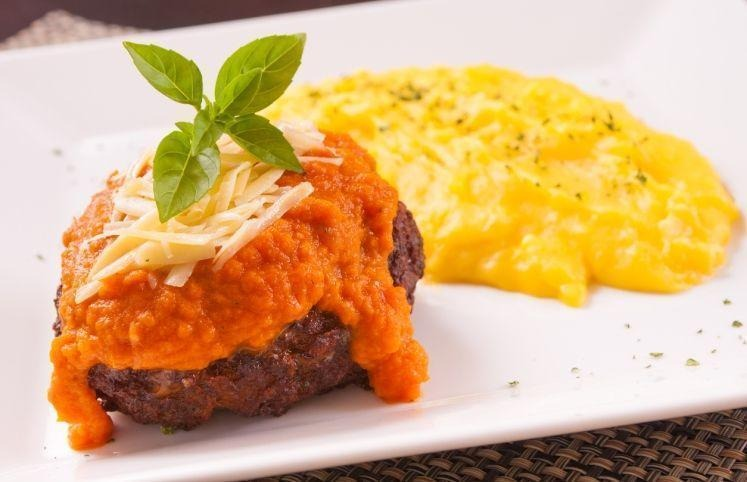

Antepasto
Ingredientes
- 2 berinjelas grandes
- 1 pimentão vermelho, 1 pimentão amarelo, 1 pimentão verde
- 3 dentes de alho
- 3 colheres (sopa) de azeitona preta picada
- 2 cebolas
- 2 colheres (sopa) de orégano
- Pimenta calabresa a gosto
- 1 pacote de uva passa
- Azeite de oliva o quanto baste
- Sal a gosto
Modo de preparo
- Pique todos os ingredientes em quadradinhos.
- Reserve a uva passa e misture os demais ingredientes.
- Coloque a mistura em uma forma e regue com azeite.
- Leve ao forno e mexa de 15 em 15 minutos, sempre colocando um pouco mais de azeite quando necessário (tem que ficar molhadinho sempre).
- Quando perceber que está bem em ponto de molho (não pode estar derretido) coloque as uvas passa e deixe mais uns 15 minutos.
- Sirva com torradas e pães sírio.
Ravioli

Ingredientes
- 280 g de farinha de trigo
- 120 g de sêmola de grano duro
- 4 ovos
- 480 g de ricota de búfala (escorrida)
- 50 g de queijo parmesão ralado fino
- 1 pitada de açúcar
- raspas de 1 limão-siciliano
- folhas de manjericão picadas a gosto
- noz-moscada ralada na hora a gosto
- sal a gosto
Modo de preparo
- Numa tigela grande, misture as farinhas e reserve uma porção de 1/3 de xícara
- Numa tigela pequena, quebre um ovo de cada vez e transfira para outra tigela. Bata os ovos para misturar as claras com as gemas.
- Abra um buraco no centro da farinha, como se fosse um “vulcão”. Adicione os ovos batidos no centro e comece misturando com um garfo, do centro para as bordas.
- Numa tigela média, coloque a ricota, adicione o parmesão, as raspas de limão e o manjericão picado. Tempere com uma pitada de açúcar, sal e noz-moscada a gosto, leve à geladeira por 30 minutos.
- Corte a massa em quatro partes e com um rolo abra a massa em folhas
- Transfira os raviólis para uma travessa levemente enfarinhada e repita com o restante.
- Leve uma panela grande com água ao fogo alto para ferver. Adicione sal e mergulhe uma parte dos raviólis
- Sirva os raviólis de queijo com molho de tomate.
Lasanha a Bolonhesa

Ingredientes
- 500 g de massa de lasanha
- 500 g de carne moída
- 2 caixas de creme de leite e 1 caixa de molho de tomate
- 3 colheres de manteiga
- 3 colheres de farinha de trigo
- 500 g de presunto e 500 g de mussarela e queijo ralado
- sal a gosto
- 2 copos de leite
- 1 cebola ralada e 3 dentes de alho
- 3 colheres de óleo
Modo de preparo
- Cozinhe a massa segundo as orientações do fabricante, despeje em um refratário com água gelada para não grudar e reserve.
- Refogue o alho, a cebola, a carne moída, o molho de tomate, deixe cozinhar por 3 minutos e reserve.
- Derreta a margarina, coloque as 3 colheres de farinha de trigo e mexa. Despeje o leite aos poucos e continue mexendo. Por último, coloque o creme de leite, mexa por 1 minuto e desligue o fogo.
- Despeje uma parte do molho à bolonhesa em um refratário, a metade da massa, a metade do presunto, a metade da mussarela, todo o molho branco e o restante da massa.
- Repita as camadas até a borda do recipiente.
- Finalize com o queijo ralado e leve ao forno alto (220° C), preaquecido, por cerca de 20 minutos.
Polpettone Recheado

Ingredientes
- 300 g de carne moída de primeira
- Sal e pimenta a gosto e 1 dente de alho pequeno picado
- 1/2 cebola pequena picada
- 1 colher sopa de cheiro verde picado
- 1 colher de farinha de rosca embebida em 1/3 de xícara de leite e 1 xícara de farinha de trigo
- 2 ovos
- Farinha de rosca para empanar
- 2 xícaras de molho já pronto de tomate
- 4 fatias de queijo mussarela
Modo de preparo
- Em uma tigela adicione a carne, a cebola, o alho e o cheiro verde e tempere a gosto.
- Adicione um ovo e devagar a farinha de rosca embebida no leite, vá colocando aos poucos a farinha de trigo até que a massa fique homogênea e macia.
- Molhe as mãos levemente em água pegue uma porção da carne e faça uma bola, amasse para virar um prato, dobre uma fatia de queijo em quatro e envolva com a massa.
- Bata o ovo restante com um pouco de leite e passe os bolinhos e em seguida na farinha, usando o mesmo óleo frite novamente até dourar.
- Mergulhe em uma panela com molho de tomate de sua preferência e aproveite.
Pizza
Ingredientes
- 250g de farinha de trigo
- 1/2 colher (chá) de sal
- 1 tablete de fermento biológico fresco
- 1/8 litro de água morna (125ml)
- 1/4 colher (chá) de açúcar
- 5 colheres (sopa) de azeite de oliva
Modo de preparo
- Em uma tigela adicionar a farinha e misturar o sal, fazer um buraco no meio e reservar.
- Esquentar a água, sem deixar ferver.
- Dissolver o fermento de pao nesta água e adicionar o açúcar..
- Adicionar esta mistura no meio do trigo, deixe descancar em um lugar morno por 30 minutos.
- Adicionar o azeite e trabalhar esta massa como se trabalha massa de pão, fazer uma bola com a massa e deixe-a descancar uma hora em um lugar morno.
- Abra a massa e recheie a seu modo.